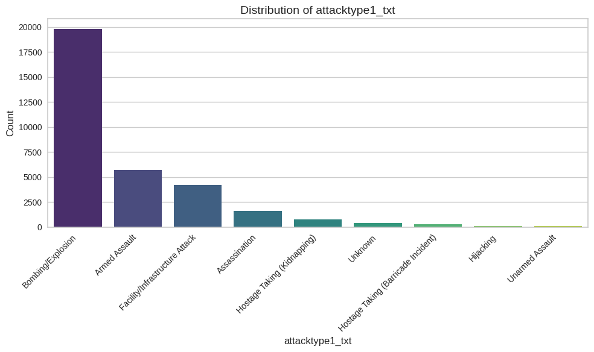
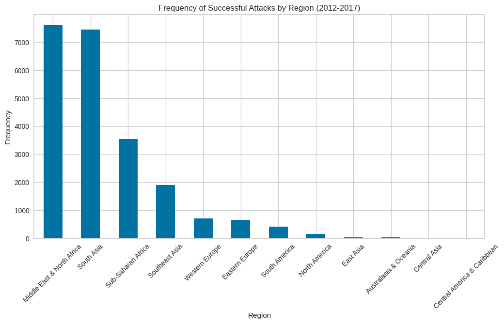

Some data visualization made with matplotlib on the Global Terrorism Dataset.
The course for this project is a course that study about data science.
That is why in this course project, the main objective is to do EDA (Exploratory Data Analysis), classification,
regression, and clustering from the given dataset.
Before starting the modelling process, we did EDA and Visualization, searching for answers regarding the data
context. After that, we did data preparation for the modelling process. Dropping immeasurable columns, deleting
empty rows, trimmed outliers, etc.
After the data preparation step, then we head to modelling, done in three kinds which are classification for
labeled predictions and regression for numerical prediction, and clustering to explore new category that can be
extracted from the data.
It was a project that consume fairly much time. Searching for better data cleaning techniques for each modelling,
repeating the process again and again in the aim for a better result.